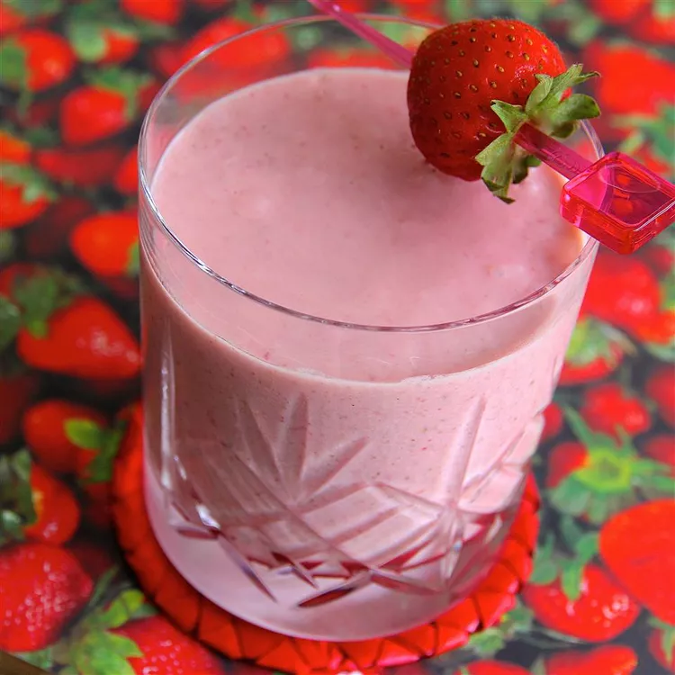

LET'S MAKE A REFRESHING STRAWBERRY OATMEAL SMOTHIE! YAY!

This is a fast and filling smoothie with a deep-pink color and a rich, creamy texture.
INGREDIENTS:
- rolled oats
- chia seeds
- greek yogurt
- banana, broken to chunks
- almond milk
- frozen strawberries
- vanilla extract
RECIPE
- Blend oats and chia seeds together in a blender to a fine consistency. Add strawberries, yogurt, banana, almond milk, and vanilla extract; blend until smooth.